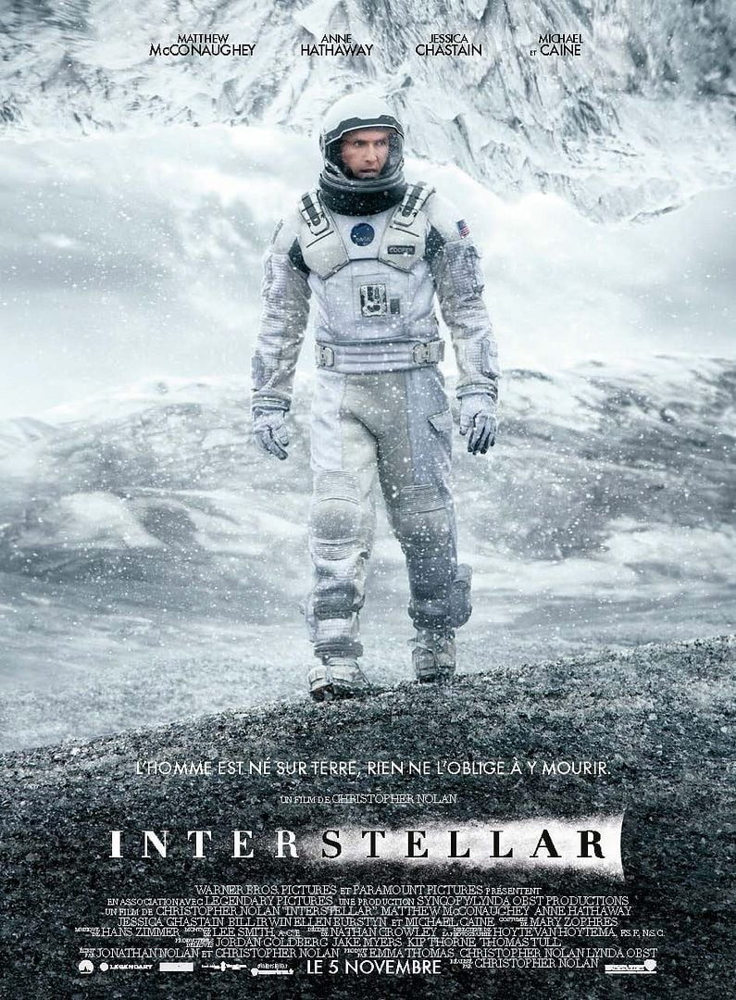

Em cartaz
O Frame reúne filmes para assistir quando quiser. Veja o destaque da semana, confira a ficha do filme e compare os planos.

Interestelar
2014 · 2h 49min · Ficção científica
Em um futuro com a Terra quase sem recursos, o piloto Cooper deixa a família para cruzar um buraco de minhoca e procurar um novo lar para a humanidade.
Direção de Christopher Nolan. Elenco com Matthew McConaughey e Anne Hathaway. Nota do público: 8,7 / 10.
Ver detalhesNo Frame
Catálogo
Os filmes em destaque ficam nesta página, com o cartaz e uma prévia da história.
Detalhes
Cada título mostra a sinopse, a equipe técnica, a nota do público e uma galeria de imagens.
Planos
Couch, Cinema e IMAX mudam de preço, de telas e de qualidade. A comparação está na página de valores.